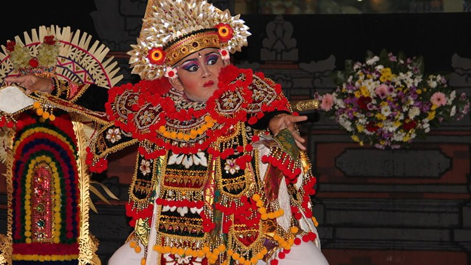

Tari Baris
Tari Baris adalah salah satu tarian tradisional Bali yang identik atau ditarikan oleh kaum lelaki. Sebagai penggambaran ketangguhan seorang prajurit bali yang hendak pergi berperang, gambaran kejantanan pahlawan Bali dan menunjukkan kemantapan kepemimpinannya.
Perihal penamaan dari tarian ini, dalam bahasa bali istilah “Baris” memiliki arti yang sama dengan “Baris” yang ada dalam Bahasa Indonesia.
Penamaan ini merujuk pada barisan prajurit yang berbakti sepenuhnya pada seorang raja. Dikatakan bahwa inilah jenis tari yang pertama kali diajarkan kepada setiap anak laki-laki sebelum mereka beranjak dewasa.
<< Kembali